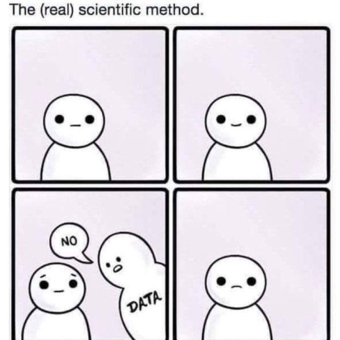
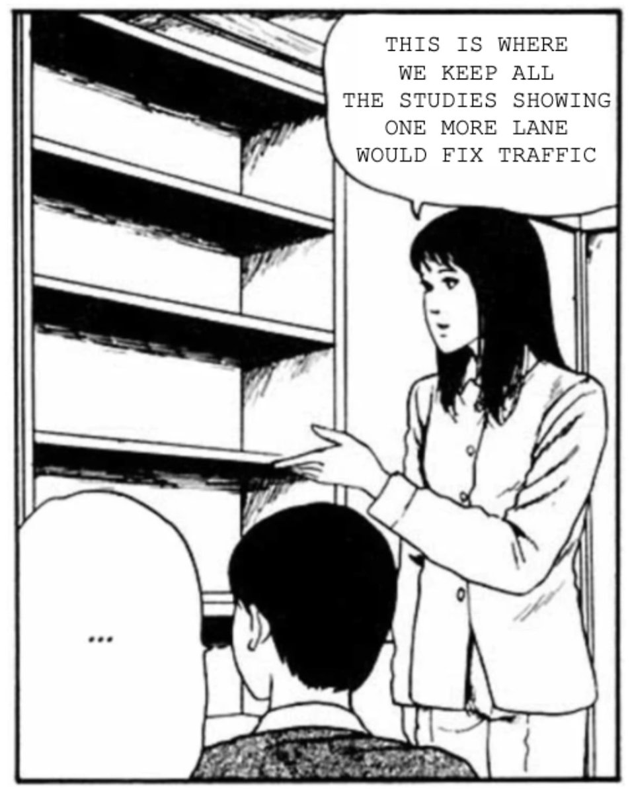
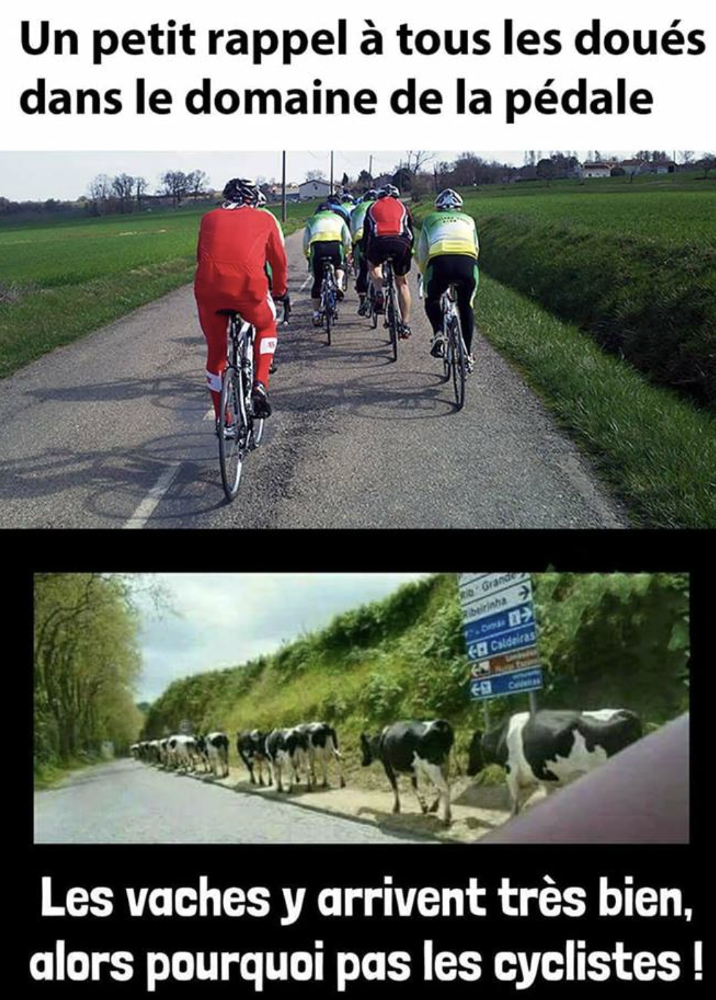
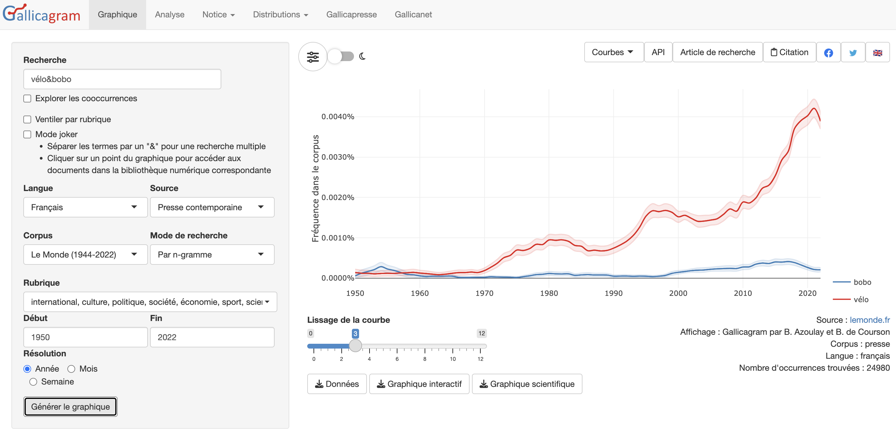
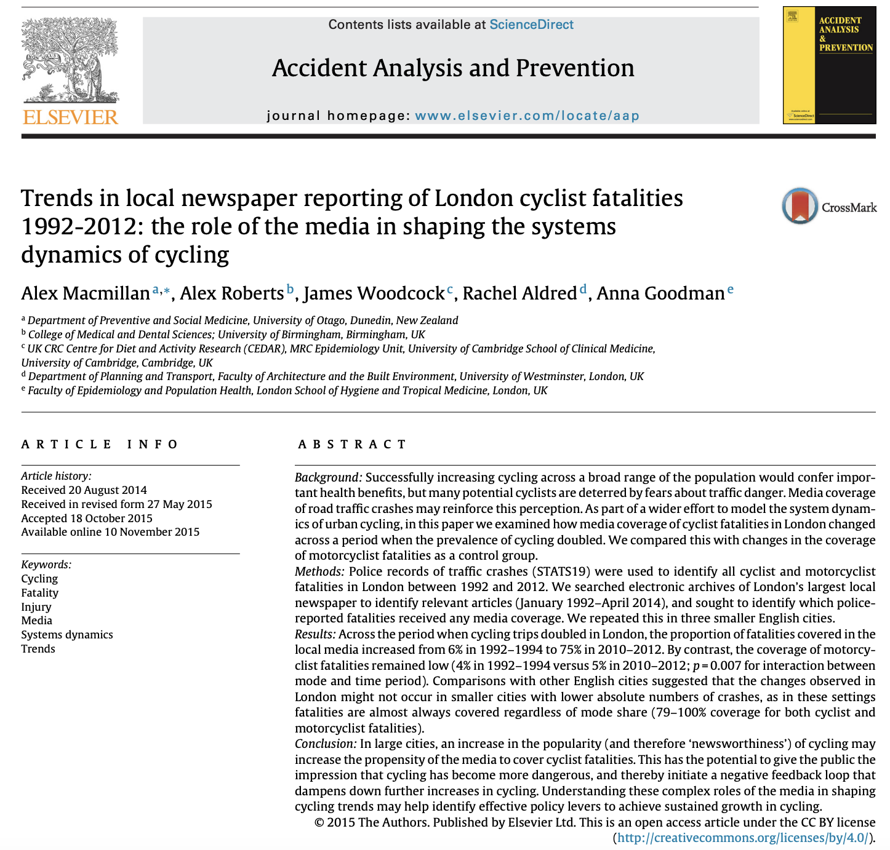
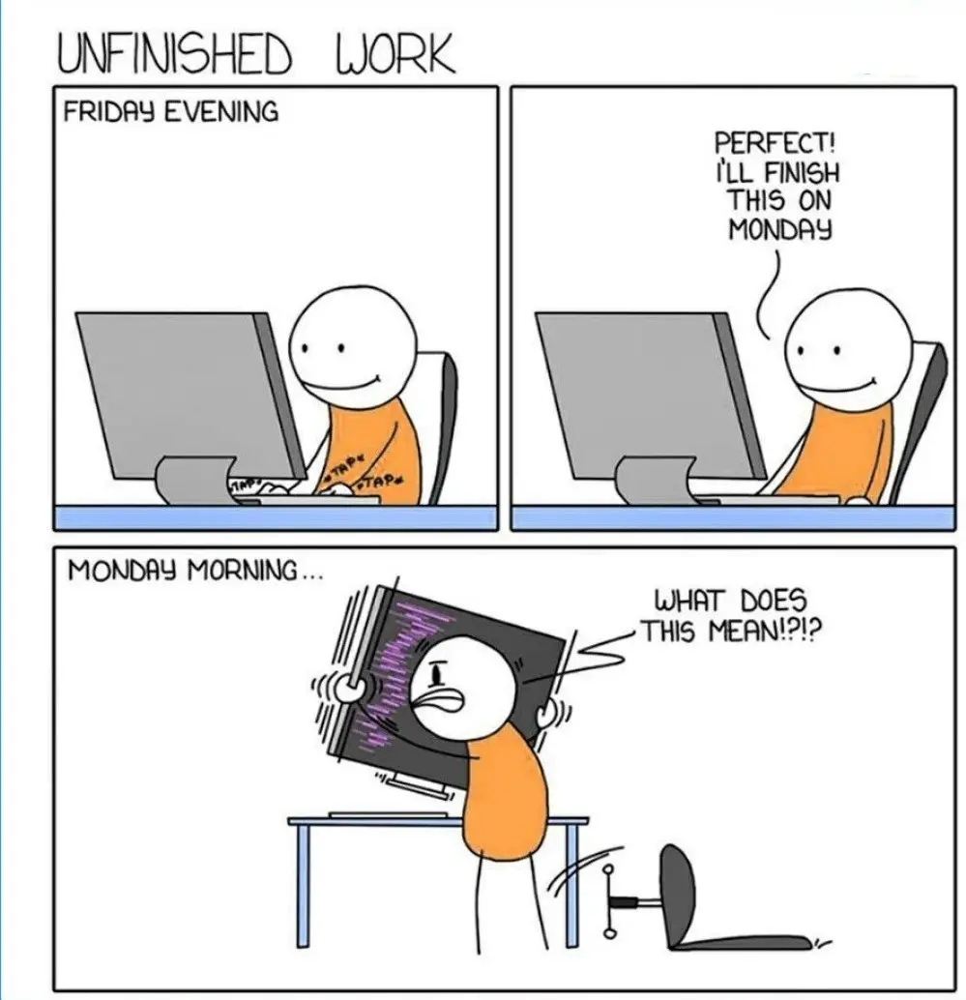
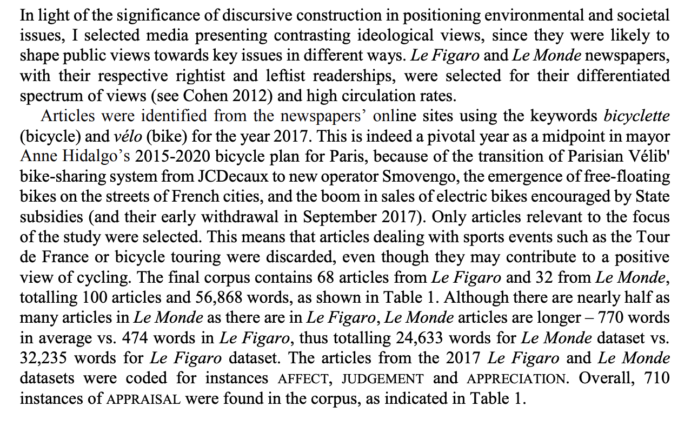

Exploration des savoirs
L’enquête, ses données
Objectifs
- Lien enquête/données
- Réfléchir aux données possibles
- Discuter bonnes pratiques
La démarche d’enquête
- Discussion 360°
- Phase exploratoire / contexte de découverte
- Consolidation de la question principale
- Calendrier & objectifs & données pour l’argumentation
- Démarche de collecte et de preuve
- Analyse
- Restitution
Parlons données
Les données dans l’enquête
Connaître la réalité ➡️ quel accès ?
- Sources
- Résultats d’autres enquêtes
- Documenter directement les phénomènes
- le langage des données
Mise à l’épreuve des affirmations
C’est quoi une donnée ?
Définition générique : un ensemble d’informations issues par différentes transformations de traces laissées par un phénomène1
- définition a-disciplinaire
- importance du lien avec un phénomène
- la donnée n’est pas le phénomène
- des étapes intermédiaires
- nature de la “trace” recueillie : comment ? quoi ?
Des données partout

Et sans fin

Problématique fil rouge
Cohabituation des mobilités en ville
Constat de transformations en cours et de conflits entre les différentes mobilités dans les zones urbaines.
- Quels sont les transformations en cours ?
- Quelle place pour les nouvelles mobilités ?
- Comment la cohabitation s’organise avec la croissance de l’usage du vélo ?
Une question interdisciplinaire et controversée
Enquêter pour dépasser les stéréotypes


Quelles sont les données possibles ?
Pour enquêter sur les cohabitations des mobilités autour de l’université et la place du vélo.
Types de données
- Mon expérience de cycliste
- …
La place des données dans la démarche
- Theory-driven
- Les données arrivent après la formulation d’une hypothèse
- Data-driven
- Les réponses émergent des données (notamment, le big data)
En fait
- Aucune donnée ne peut répondre à toutes les questions
- Aucune donnée ne répond en soit à une question
L’enquête : un mouvement plus incrémental liant terrain & données
Deux principaux usages
Les données interviennent à différents moments dans l’enquête
- Exploratoire/découverte : diversifier son rapport au monde
- Argumentation/justification : défendre un argument
- (Illustration)
Mais des spécialités “régionales” de données
- Chaque domaine/secteur a ses données
- Histoire/Physique/Biologie
- Procès/Journalistes/…
- Pour l’enquête interdisciplinaire
- Dépasser les habitudes
- Relier des pratiques différentes
- Se nourrir de la diversité
Importance d’un vocabulaire commun
Le mythe du processus linéaire

Un processus itératif
- Le lien entre question & données n’est pas immédiat
- Processus itératif :
- Certaines données amènent à des questions
- Certaines questions amènent à chercher des données
- Mais
- Certaines données n’existent pas
- Accepter une certaine forme d’insatisfaction
Un appariement pragmatique et toujours partiel ; passe souvent par expliciter le protocole
Est-ce que toutes ces données se valent ?
- Format : brut ou transformé (étapes intermédiaires)
- Nature différentes (valeur, texte, image, …)
- Disponibilité (déjà collectées, à collecter)
- Taille
- Qualité
Face à cette diversité
- Comment choisir les données les plus pertinentes ?
- Comment les manipuler et les stocker ?
- Comment passer des données à des résultats ?
Enjeu : prendre au sérieux les données pour des enquêtes plus riches et des affirmations plus solides.
Corpus : construction & représentativité
Corpus = ensemble de données rassemblée suivant une logique
Pourquoi ?
- Décrire un ensemble d’éléments
- Situer des éléments par rapport à d’autres
Pratiques du vélo
Une donnée : un entretien avec un cycliste
Un corpus : des entretiens avec tous les cyclistes qui ont accepté de répondre à mes questions un samedi soir rue Rivoli
Enjeu de la représentativité
A-t-on suffisamment de données ? Est-ce que l’on peut vraiment se dire que l’on peut caractériser l’entièreté du phénomène ?
- Dépend des domaines
- Définir l’entité (population, grandeur, etc.) à représenter et le passage du corpus à cette entité
Comment faire ?
- Entre méthodes & bricolage
- Important de justifier/mettre en discussion.
Produire vs. réutiliser des données
- Données primaire
- construire ses données/corpus
- un gradient allant de la production complète à la mise en forme
- Données secondaire
- données déjà constituées
- permet d’explorer en amont de l’enquête
- multiplication des données disponibles open data
- Entre les deux : l’explosion des traces numériques
- accès à des bases de données/API
Conséquences de la disponibilité
- Données primaires : possible de les adapter à sa question mais vulnérabilité du protocole
- Données secondaires : répondent souvent à une autre question que la votre
Vélo & Justice
- Les données de comptage des vélos à Paris produits par la ville
- Compter moi-même les vélos dans une rue
La forme compte : quels formats ?
- Données “désagrégées” permettant les recombinaisons:
- structurées
- tabulaires
- peu structurée
- un mélange de formats
- pas structuré
- un contenu dont il faut extraire l’information
- structurées
- Données déjà agrégées
- Tableaux déjà calculés
- Graphiques
Une pragmatique des données
Des arbitrages
- Balance coût / avantage de l’accès à des données
- Adéquation avec les objets de la question
- Adéquation avec la nature de la question
- Facilité de retransformer les données
- Disponibilités des méthodes d’analyse pour obtenir un résultat
Où mettre son énergie ?
Difficulté d’accès aux données
- Le coût des données :
- ces données peuvent déjà exister 👍
- peuvent être collectées avec un effort raisonnable 💪
- sont couteuses à récolter 👎
Des choix à faire
- Réaliser ma propre enquête par questionnaire, avec mes questions spécifiques
- Utiliser les données publiques disponibles à l’échelle des villes
Volume des données
- Le volume des données n’est pas l’élément le plus important
- Adéquation avec la question
Ne pas hésiter à restreindre la taille et privilégier l’adéquation
Qualité des données
Toutes les données ne se valent pas : une qualité multidimensionnelle.
- Tracabilité de la chaine de production
- Fiabilités (producteurs douteux, ou au contraire légitime)
- Données manquantes (est-ce qu’il manque des élément)
- Erreurs dans le corpus
- Ouverture versus fermeture de l’accès
- …
L’analyse dans tout ça ?
- La valeur des données vaut par la capacité d’en faire découler des résultats (actionner les données)
- Interdépendance collecte/données/résultats (par ex. l’expérimentation)
- Certaines analyses sont complexes et posent la question de la faisabilité (ex. statistiques)
- Des outils spécifiques…
Par quelles données débuter
Les données “accessibles”
- Toute enquête se pose la question:
- De l’espace public
- De la production des connaissances
- Avec quelques manières de les utiliser
- Ce point sera traité dans une séance ultérieure plus en détail
Il n’y a pas vraiment de limites, n’hésitez pas à être créatifs
Documenter l’espace public : la presse
L’article de presse comme contenu complexe :
- date (évolution temporelle)
- contenu textuel (sujets)
- cadre : journal, journaliste, …
Permet une diversité d’approches :
- l’article individuel comme source
- corpus d’articles sur un sujet/période
- thèmes abordés
- acteurs récurrents
- évolutions temporelles
Accès captifs
Une presse sous droit d’auteur.
- Par des outils dédiés comme Gallicagram
- Par l’interface de portails comme Europresse
- Certains médias sont libres
Cadrage d’une tendance
Construire et extraire un corpus d’Europresse
Accès Europresse à des données payantes
Vélo & Justice
Comment aborde-t-on la question des inégalités quand on parle du vélo en région parisienne ?
Le contour du corpus :
- Définir la période
- Définir les mots-clés
- Définir les journaux concernés
- Se concentrer sur un journal
- Sur un bouquet?
Construire des requêtes
- Chaque interface a sa grammaire
- Lire les résultats
- Ne pas hésiter à combiner les éléments
- Viser un nombre réaliste de résultats
Consulter vs. conserver
Possibilité de consulter sur Europresse. Mais comment conserver ?
- Collecter à la main vs. télécharger
- Des transformations nécessaires
Puis aller vers l’analyse :
- Descriptive : compter
- Plus avancée
- Visualisations
Statut des données
Ce sont des données sous droit d’auteur. Leur usage est très réglementé. Il y a une tolérance pour la recherche mais il est interdit des diffuser.
Exemple d’analyse de la presse

Mettre en forme les données
- Délimiter le corpus
- Téléchargement sous un format HTML
- Gérer la limite
- Des fichiers HTML à dater + un document de métadonnées
- Transformer en un document tabulaire
Étendre le domaine de la presse
Europresse n’est pas le seul portail sur lequel collecter des données.
Suivant la question :
- se concentrer sur les articles parus sur un site spécifique spécialisé
- récupérer les newsletters d’une organisation
Statut des données
Récupérer les évènements de la FUB pour voir lesquels mentionnent la question de la justive : https://www.fub.fr/fub/actualites
Parenthèse : la difficile question des médias sociaux
- Une source riche d’échanges
- Mais de plus en plus fermés (Twitter, Insta, etc.)
- Difficulté de collecter massiviement
- Possibilités de constituer des petits corpus
Collecter vos propres données
Importance du protocole
- Identifier clairement le rôle des données dans votre question
- Notamment les résultats que vous attendez
- Clarifier la population ciblée & les critères de représentativité
- Identifier les risques
- Que se passe-t-il si vous n’arrivez pas à tout collecter ?
Vélo & Justice
Je veux m’intéresser aux images du vélo dans les films. Comment je construits la population de films (uniquement ceux qui le mentionne dans le résumé ? un échantillon aléatoire ?) ? Comment ensuite je code pour chaque film (je me limite au résumé de manière automatique ? Je les regarde ?)
Importance du format de codage
- Quelle “trace” garder
- Extensive : couteux
- Condensé : perte d’information
- Construire des catégories en les testant
- Ne jamais hésiter à faire des allers-retours
Données “quantitatives” et “qualitatives”
- Division un peu artificielle
- Passages possibles du qualitatif au quantitatif
- Codage des entretiens
- Analyse du texte
- Importance de la structure des jeux de données / leur meta-informations
Exemple des entretiens
Définir le dispositif de collecte
- Quel est le corpus (qui va être interrogé)
- Comment passer du discours à des données
- Annotation : quoi ?
- Quels éléments doivent être présents dans l’entretien absoluments ?
- Que se passe-t-il s’il manque un entretien ?
Exemple des entretiens
Après : l’enregistement/retranscription est une “trace” qu’il faut mettre en forme
- Mettre les entretiens dans un format unifié
- .docx au mieux
- Nommer les fichiers de manière systématique
- Avoir un fichier avec les métadonnées (date, interlocuteur)
- Transformer les données :
- Coder des éléments spécifiques des entretiens dans un fichier
Gestion matérielle des données
En pratique :
- Comment bien collecter et conserver les données ?
- Où les stocker ?
- Comment les décrire dans ses travaux ?
- Comment travailler collaborativement avec des données ?
Bonnes pratiques numériques
- Collecter et conserver les données brutes
- Documenter le contenu dans des métadonnées
- Documenter chacune des transformations
- Consolider un corpus nettoyé avant l’analyse
Dans l’idéal, aller vers la reproductibilité
Documenter documenter documenter
Journal collectif des traitements
Format et stockage des données
- Simplifier le plus possible
- .txt, .csv, …
- Faire attention à la confidentialité
- Anonymisation/pseudonymisation
- Noms clairs
- Dater les fichiers
- Système de dossier clair
Ranger ses données
- Conserver les données brutes
- Mettre ensuite en forme les données pour faciliter les analyses

Sensibilité des données
- Limiter les données identifiantes
- Consentement et autorisation

Décrire les données dans ses travaux
Dans les travaux :
- Préciser la manière dont ont été constituées les données et.ou les sources
- Pour chaque corpus
- Donner des informations descriptives sur le contenu
- Les transformations qui ont été faites
- Ex. les filtrages
- Préciser les limitations s’il y en
- Données manquantes
- Artefacts/problèmes
L’importance de décrire les données

Aller vers l’analyse
- La valeur des données dépend des possibilités d’analyse
- Les analyses dépendent du type de données
- Trois approches :
- “à la main” : manipulation (quasi) directe des données (Excel, codage manuel, …)
- “pipeline automatisé” : usage de logiciels spécialisés (Iramuteq, VosViewer, Jamovi, …)
- “programmation” : scripts de traitement de données (Python, R)
Les données : un ingrédient (central)